19/12/2023 — Điện tâm đồ đáng lo ngại nhưng chụp mạch vành không tắc nghẽn. Chuyện gì đã xảy ra?
Bản dịch tiếng Việt của bài "Concerning EKG with a Non-obstructive angiogram. What happened?" – Dr. Smith’s ECG Blog. Giữ nguyên toàn bộ 16 hình ảnh của bản gốc.
Bài này do Willy Frick, một bác sĩ nội trú chuyên khoa tim mạch (fellow) xuất sắc ở St. Louis, viết.
https://twitter.com/willyhfrick (trang Twitter của Willy Frick)
Một người đàn ông 62 tuổi có tiền sử tăng huyết áp, đái tháo đường típ 2 và hẹp động mạch cảnh đã gọi 911 lúc 9:30 sáng vì đau ngực. Ông mô tả cơn đau có cường độ “10/10”, lan ngang ngực từ phải sang trái. Đội cấp cứu ngoài viện (EMS) ghi nhận các dấu hiệu sinh tồn sau: mạch 50, nhịp thở 16, huyết áp 96/49. Báo cáo của xe cứu thương ghi: “Huyết áp tiếp tục giảm trong lúc vận chuyển và bệnh nhân vẫn lạnh, vã mồ hôi.” Có vẻ EMS đã ghi hai điện tâm đồ, nhưng tiếc là chúng không được lưu vào hồ sơ bệnh án. Kíp EMS chỉ có chứng chỉ hỗ trợ sự sống cơ bản (BLS), nên việc đọc điện tâm đồ không nằm trong phạm vi hành nghề của họ.
Bệnh nhân đến viện ngay sau 10 giờ sáng, và điện tâm đồ sau đây được ghi. cTnI lấy cùng lúc là 0,011 ng/mL (tham chiếu <0,032 ng/mL). Lúc đó ông đang đau ngực dữ dội.
Điện tâm đồ 1

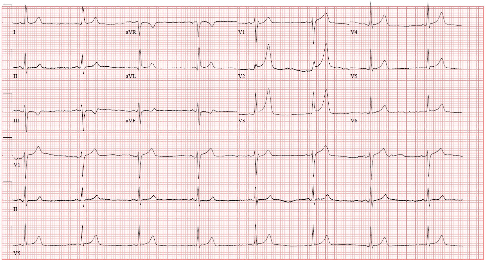
Bạn nghĩ gì?

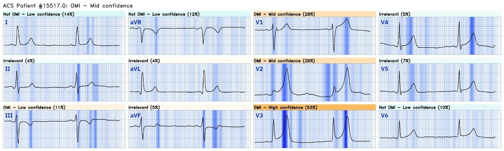
Có ST chênh lên rõ, nổi bật nhất ở V2 và V3. Dù vậy, Queen of Hearts chỉ có độ tin cậy trung bình rằng đây là OMI. Vì sao vậy? QTc là 394 ms, hơi ngắn đối với OMI. Sóng T ở V2 và V3 rất cao, nhưng đáy không đặc biệt rộng như ta chờ đợi ở sóng T tối cấp điển hình. Và đoạn ST lõm rất rõ. Tổng thể bản ghi trông có gì đó hơi “lạ”. Tôi đã gửi điện tâm đồ này cho BS Meyers và BS Smith mà không kèm thông tin nào khác. BS Meyers nói: “Tôi nghĩ nó là thật. Trong tình huống này, TQRSD đáng để chấp nhận một ca dương tính giả.” BS Smith nói: “Tôi sẽ cho là giả, NGOẠI TRỪ việc có TQRSD ở V2, V3. Vì thế phải xem LAD.”
Blog này đã bàn rất nhiều về biến dạng phần cuối QRS (terminal QRS distortion), còn gọi là TQRSD. Nó được định nghĩa là không có cả sóng S lẫn sóng J. BS Smith đã nghiên cứu điều này năm 2016 và cho thấy TQRSD ở V2 hoặc V3 có độ đặc hiệu rất cao đối với tắc LAD. Ở đây ta có TQRSD ở cả hai chuyển đạo, trên một bệnh nhân có triệu chứng phù hợp. Dù điện tâm đồ trông hơi bất thường, không có gì phải bàn rằng bệnh nhân cần được chụp mạch vành cấp cứu, và đó chính là điều đã diễn ra trong ca này.
Ba mươi tư phút sau điện tâm đồ 1, bệnh nhân được chụp mạch vành như sau:
Phim chụp mạch vành được đọc là hẹp 60% LAD đoạn giữa, hẹp 60% lỗ xuất phát (ostial) LCx và hẹp 50% RCA đoạn gần. Xem hình dưới đây:
Tổn thương LAD được khoanh màu đỏ, đường đi của nhánh trung gian (ramus) đánh dấu màu xanh, LCx đánh dấu màu đen. Đây là góc chụp RAO (chếch trước phải) chếch đầu (cranial), là góc tốt nhất để quan sát LAD từ đoạn gần đến đoạn giữa.

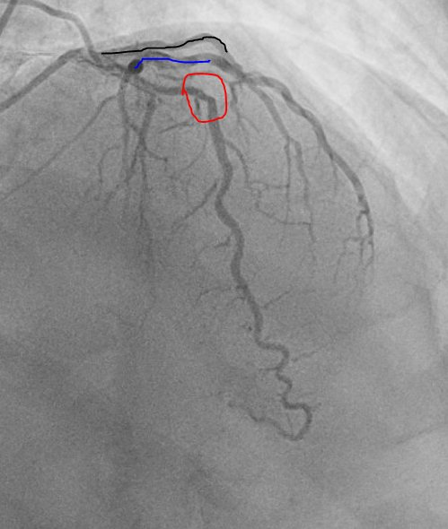
Tổn thương lỗ xuất phát LCx được khoanh màu đen
Đường đi của nhánh trung gian đánh dấu màu xanh
Đường đi của LAD đánh dấu màu đỏ.
Đây là góc chụp LAO (chếch trước trái) chếch chân (caudal), là góc tốt nhất để quan sát thân chung động mạch vành trái, chỗ chia đôi LAD và LCx (hoặc trong ca này là chỗ chia ba LAD, LCx và nhánh trung gian), cùng các đoạn gần của các mạch.

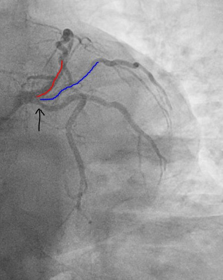
Tổn thương RCA đoạn gần thể hiện ở đây trên góc chụp LAO chếch đầu, là góc tốt nhất để thấy toàn bộ RCA trong một lần chụp.

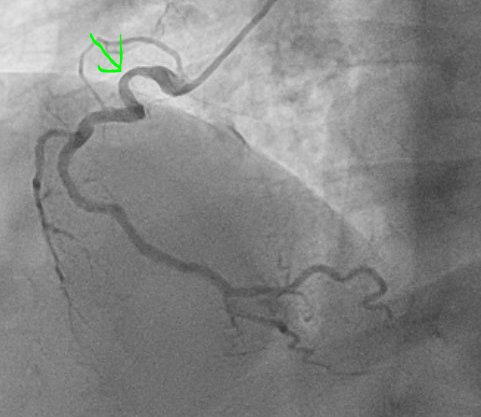
Không có bằng chứng tắc đang diễn ra trên phim chụp mạch vành. Điện tâm đồ ghi lại sau thông tim được trình bày dưới đây. Lúc ghi, bệnh nhân không còn đau ngực.
Điện tâm đồ 2

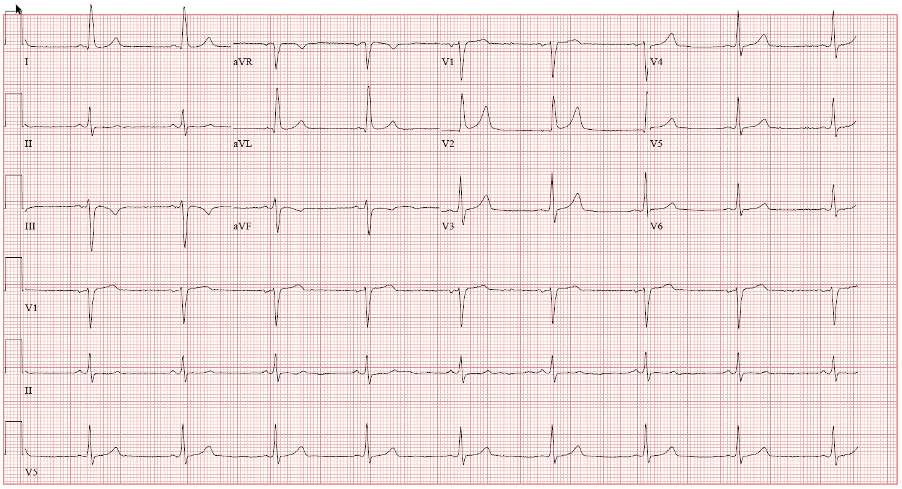

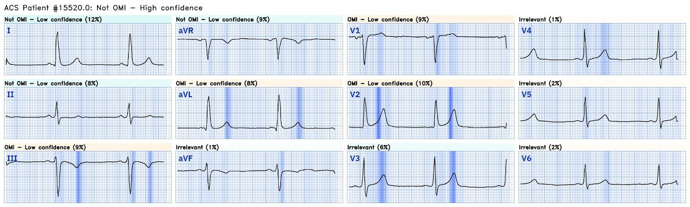
TQRSD đã hết ở V3 (lưu ý sóng S đã tái xuất hiện) và giảm rõ ở V2. Queen of Hearts thấy không có OMI với độ tin cậy cao. Siêu âm tim làm sau thông tim cho thấy phân suất tống máu tăng động, vận động thành bình thường. cTnI lặp lại 3 và 6 giờ sau lần đầu lần lượt là 0,019 ng/mL và 0,026 ng/mL. Giá trị đã tăng hơn gấp đôi, nhưng vẫn nằm trong khoảng tham chiếu.
Tất cả những điều này có nghĩa là gì? Dương tính giả chăng?
Ca này minh họa một vài điểm quan trọng.
Thứ nhất, luôn đáng nhớ rằng huyết khối mạch vành có tính động. Chúng không cố định bất biến. Cơ thể người có các cơ chế tiêu sợi huyết nội sinh. Trước kỷ nguyên PCI hiện đại, hội chứng vành cấp được điều trị bằng thuốc tiêu sợi huyết, vốn là các phiên bản tái tổ hợp của protein người. Bệnh nhân thường tự tái thông (và tự tắc lại). Điện tâm đồ cho bạn biết điều gì đang xảy ra trong động mạch vành ngay lúc này, nhưng điều đó có thể thay đổi khi chụp mạch vành được thực hiện, dù chỉ ba mươi tư phút sau.
Thứ hai, có cả một phổ nguyên nhân gây nhồi máu cơ tim ở bệnh nhân có động mạch vành không tắc nghẽn (gọi là MINOCA). MINOCA được định nghĩa là nhồi máu cơ tim (phát hiện cTn tăng và/hoặc giảm với ít nhất 1 giá trị trên giới hạn tham chiếu bách phân vị thứ 99, kèm dấu hiệu hoặc triệu chứng thiếu máu cục bộ) và không có hẹp >50% trên chụp mạch.
Mở ngoặc ngắn: Ca này không đủ tiêu chuẩn MINOCA vì hai lý do.
- cTnI không tăng vượt giới hạn tham chiếu, điều bắt buộc để chẩn đoán nhồi máu cơ tim. Tuy nhiên, cTnI quả thật đã tăng hơn gấp đôi, từ 0,011 ng/mL lên 0,026 ng/mL. Những thay đổi của troponin thế hệ đương thời dưới ngưỡng tham chiếu 99% có thể phản ánh, hoặc không phản ánh, tổn thương cơ tim thật. Những thay đổi như vậy đặc biệt khó chắc chắn với loại troponin cũ “thế hệ đương thời, thế hệ thứ 4”, vốn đo mức chênh (delta) kém chính xác hơn nhiều so với troponin độ nhạy cao (hs troponin).
- Định nghĩa chặt chẽ của MINOCA đòi hỏi không có hẹp > 50%, trong khi các bác sĩ chụp mạch đọc là 60%. Tuy nhiên, khác biệt giữa 50% và 60% mang tính chủ quan cao đến mức gần như không còn ý nghĩa, và nguyên lý nền tảng vẫn áp dụng được.
Vài điểm về MINOCA
- Nó là một nhận xét hơn là một chẩn đoán thực thụ. Cần thêm xét nghiệm và đánh giá để xác định nguyên nhân và từ đó là cách điều trị.
- Nó không hiếm. Một tổng quan hệ thống gần đây cho thấy 6% các ca nhồi máu cơ tim cấp là MINOCA.
- Các nguyên nhân thường gặp nhất của MINOCA gồm: nguyên nhân do xơ vữa như nứt vỡ hoặc mòn mảng xơ vữa kèm tiêu huyết khối tự phát, và nguyên nhân không do xơ vữa như co thắt mạch vành (đôi khi gọi là đau thắt ngực biến thể hay đau thắt ngực Prinzmetal), thuyên tắc hoặc huyết khối mạch vành, và có thể cả rối loạn chức năng vi mạch.
- Hai phần ba số ca MINOCA là do nguyên nhân xơ vữa
Một cách để chứng minh chẩn đoán trong ca này là dùng hình ảnh học trong lòng mạch vành như chụp cắt lớp quang học (OCT) hoặc siêu âm trong lòng mạch (IVUS). May mắn thay, đó chính xác là điều đã được làm. Đáng tiếc là chúng tôi không có những hình ảnh này để xem lại, nhưng các bác sĩ can thiệp mô tả một mảng xơ vữa LAD bị nứt vỡ và họ đã đặt stent vùng này, giúp bảo đảm sự ổn định của mảng xơ vữa. Sau đó bệnh nhân diễn tiến tốt, không tái phát triệu chứng. Không có thêm điện tâm đồ hay xét nghiệm troponin nào. Siêu âm tim của ông cho thấy vận động thành bình thường. Hình LAD trước và sau can thiệp được trình bày dưới đây.

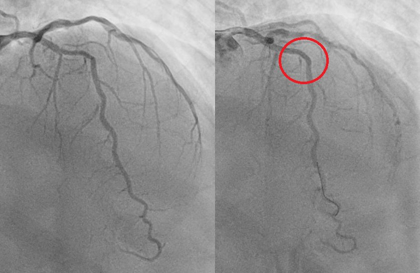
Hình bên trái cho thấy LAD trước can thiệp, và phần khoanh đỏ ở hình bên phải là vùng đã đặt stent. Trông không khác biệt mấy vì trước đó lòng mạch không bị tắc nghẽn nặng.
Bệnh nhân này rất may mắn vì chỉ bị tắc trong thời gian rất ngắn rồi tự tái thông.
Vì có huyết khối đã được chứng minh (ACS) nhưng troponin chưa bao giờ vượt ngưỡng tham chiếu 99% (và do đó không thể gọi là nhồi máu cơ tim — định nghĩa nhồi máu cơ tim đòi hỏi troponin tăng và/hoặc giảm với ít nhất một giá trị trên ngưỡng tham chiếu 99%), nên đây là ĐAU THẮT NGỰC KHÔNG ỔN ĐỊNH kèm ST chênh lên.
Những điểm cần học:
- Như mọi khi, hãy nhớ rằng TQRSD ở V2-V3 phải được coi là có giá trị chẩn đoán tắc LAD cấp.
- Tắc mạch có thể rất ngắn, và việc chụp mạch vành không thấy tắc không loại trừ một đợt tắc vừa mới xảy ra rồi tự tái thông.
- Hình ảnh học trong lòng mạch thường cần thiết khi chụp mạch vành thông thường không cho câu trả lời rõ ràng. BS Gregg Stone mới đây đã công bố kết quả của phân tích gộp mới nhất, chưa được xuất bản, cho thấy lợi ích về tử vong do mọi nguyên nhân khi sử dụng hình ảnh học trong lòng mạch (OCT và IVUS).

===================================
BÌNH LUẬN CỦA TÔI, bởi KEN GRAUER, MD (19/12/2023):
===================================
Một ca tuyệt vời của BS Willy Frick — làm nổi bật rất nhiều điểm quan trọng về việc nhận ra một OMI gần như chắc chắn dù không có tổn thương tắc nghẽn trên phim thông tim. Tôi xin bổ sung vài điểm cho phần bàn luận sâu sắc của BS Frick.
- Như BS Frick đã nêu — về mặt kỹ thuật, ca hôm nay không “đủ tiêu chuẩn” là MINOCA ( = MI with Non-Obstructive Coronary Arteries – nhồi máu cơ tim với động mạch vành không tắc nghẽn). Dù vậy, trên thực hành — tôi thấy khó mà coi ca hôm nay là bất cứ điều gì khác ngoài MINOCA! Đó là vì bệnh nhân này có bằng chứng lâm sàng, điện tâm đồ và Troponin cho thấy một biến cố cấp đã thực sự xảy ra (tức là, Troponin tăng hơn gấp đôi trong bối cảnh kiểu đau ngực thay đổi, tương quan về thời gian với các thay đổi điện tâm đồ “động” — do đó gợi ý mạnh mẽ một đợt tắc cấp thoáng qua, bất kể kết quả thông tim trong ca hôm nay).
- LƯU Ý: Để biết thêm về MINOCA — Mời xem PHẦN BỔ SUNG của tôi bên dưới.
Như các BS Frick, Meyers và Smith đã nêu — có lẽ khía cạnh thuyết phục nhất của vẻ ngoài “lạ” trên điện tâm đồ ban đầu của ca hôm nay — là sự hiện diện rõ rệt của T-QRS-D (Terminal QRS Distortion – biến dạng phần cuối QRS). Để ôn lại bằng hình ảnh — tôi đã thêm Hình 3 và 4 bên dưới trong PHẦN BỔ SUNG của tôi.
- Ca hôm nay độc đáo đối với dấu hiệu điện tâm đồ vô giá này — ở chỗ nó cho chúng ta cơ hội quan sát sự thay đổi liên tiếp về mức độ tương đối của T-QRS-D (được làm nổi bật trong các hình chữ nhật ĐỎ và XANH ở chuyển đạo V2 và V3 của Hình 1).
CÂU HỎI Thử thách:
Thay đổi tương đối của T-QRS-D không phải là điều duy nhất thay đổi trong khoảng thời gian giữa lúc ghi 2 điện tâm đồ trình bày ở Hình 1.
- Còn điều gì KHÁC thay đổi giữa thời điểm ghi 2 bản ghi này?
- Dựa vào các ghi chú bệnh sử tôi đặt ở phía trên mỗi bản ghi điện tâm đồ #1 và điện tâm đồ #2 — Kết luận lâm sàng không thể nhầm lẫn về điều đã xảy ra trong ca hôm nay là gì?

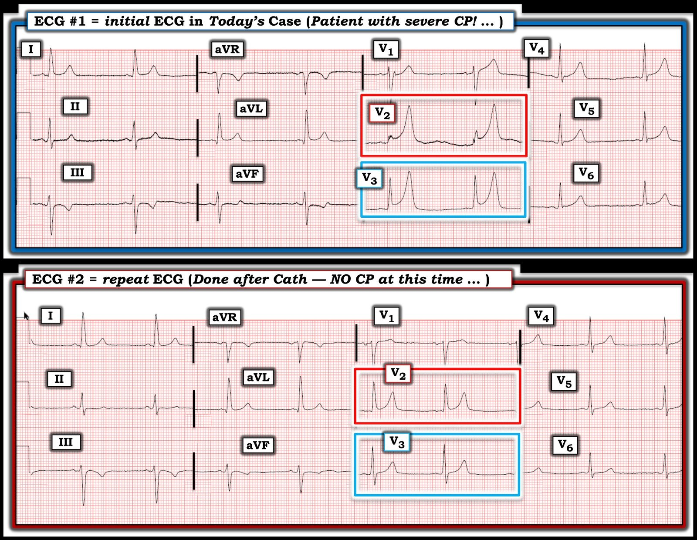
So sánh giữa điện tâm đồ #1 và điện tâm đồ #2 trong Hình 1:
Như BS Frick đã nêu trong phần bàn luận — T-QRS-D đã hết hoàn toàn ở chuyển đạo V3 của điện tâm đồ #2 (giờ đây cho thấy sóng S rõ rệt đã tái xuất hiện ở chuyển đạo này) — và T-QRS-D ở chuyển đạo V2 đã gần như hết. Nhưng còn có những thay đổi MẤU CHỐT khác!
- Về lâm sàng — cơn đau ngực dữ dội của bệnh nhân đã hết hoàn toàn vào lúc ghi điện tâm đồ #2!
BẠN có để ý rằng các bất thường ST-T thấy ở điện tâm đồ #1 — đã cải thiện đáng kể ở điện tâm đồ #2 không?
- Sóng T dương ở chuyển đạo I và aVL — các chuyển đạo bên cao — nhỏ hơn và bớt “đầy đặn” trên điện tâm đồ ghi lại.
- Mỗi chuyển đạo thành dưới cũng cho thấy cải thiện (tức là, sóng T nhỏ hơn nhiều ở chuyển đạo II — sóng T bớt đảo ngược ở chuyển đạo III — và sóng T bớt đảo ngược, kèm mất đi sóng T hai pha dạng xuống-lên (down-up) trước đó thấy ở chuyển đạo aVF).
- Biên độ sóng T giảm rõ rệt ở cả 6 chuyển đạo trước tim (đặc biệt ở các chuyển đạo V1,V2,V3).
- KẾT LUẬN: Với việc hết đau ngực dữ dội đi kèm sự cải thiện rõ rệt các bất thường ST-T nêu trên ở hầu như tất cả chuyển đạo trong vòng chưa tới 1 giờ giữa lúc ghi điện tâm đồ #1 và #2 — điều này gợi ý mạnh mẽ mạch “thủ phạm” đã mở lại (dù đó là mạch nào) — bất kể việc “không thấy tổn thương tắc nghẽn” vào thời điểm tình cờ thực hiện thông tim.
- Việc Troponin tăng hơn gấp đôi (dù chưa vượt “giới hạn bình thường” của Troponin) — phù hợp với một OMI ngắn, chỉ có một khoảng thời gian ngắn tắc hoàn toàn.
Điểm Lâm sàng MẤU CHỐT về các bản ghi So sánh:
Dù tôi nhận ra ngay sự cải thiện tương đối về mức độ T-QRS-D giữa 2 bản ghi ở Hình 1 — ban đầu tôi đã không nhận ra các thay đổi hình thái ST-T giữa 2 bản ghi rõ rệt đến mức nào ở hầu như tất cả chuyển đạo trên các điện tâm đồ này!
- Thật DỄ vô cùng để bỏ sót các thay đổi ST-T liên tiếp nếu bạn chỉ xem từng bản ghi riêng lẻ. Đặt hai bản ghi cạnh nhau (như tôi làm ở Hình 1) — giúp nhận ra nhanh và dễ hơn rất nhiều những khác biệt “thật” về hình thái ST-T — điều mà, cùng với việc hết đau ngực trong ca này, chứng minh rằng nguyên nhân của MINOCA trong ca hôm nay thực sự là một OMI cấp thoáng qua.
- Nếu ghi thêm điện tâm đồ (cả trước và sau thông tim) — tôi chắc rằng sẽ thấy các thay đổi ST-T tái tưới máu rõ hơn.
PHẦN BỔ SUNG (19/12/2023):
- Để ôn lại — tôi trích dẫn dưới đây tài liệu về T-QRS-D và MINOCA.
==========================================
Trích từ Bình luận của tôi trong bài ngày 15 tháng Mười Một năm 2023 trên Dr. Smith’s ECG Blog:
==========================================
Các điểm lâm sàng về MINOCA:
Với y văn ước tính tỷ lệ MINOCA khoảng 5-15% ở các bệnh nhân ban đầu được chẩn đoán STEMI hoặc “NSTEMI” — điều quan trọng là cần biết các bệnh lý thường gặp hơn liên quan đến thực thể này (Xem Hình 2).
- Như BS Frick đã nêu — một quan niệm sai lầm quá phổ biến là việc không có bệnh mạch vành tắc nghẽn trên thông tim sẽ loại trừ tắc mạch vành cấp là nguyên nhân gây biến cố cấp của bệnh nhân. Điều đó không đúng.
- Diễn đạt lại lời bình của BS Smith trong bài ngày 19 tháng Năm năm 2020: — Bệnh mạch vành không tắc nghẽn không nhất thiết có nghĩa là không có nứt vỡ mảng xơ vữa kèm huyết khối. Đó là vì các mảng xơ vữa không gây tắc nghẽn vẫn có thể nứt, tạo huyết khối, gây tắc hoàn toàn (hoặc gần hoàn toàn), rồi tự tiêu (huyết khối tự tiêu kèm tái tưới máu) — mà khi chụp mạch vẫn chỉ hẹp dưới 50%. Những mảng này thường không được nhận ra là “thủ phạm”, vì không thấy vết nứt hay loét. Do đó (và như BS Frick đã nhấn mạnh trong ca hôm nay!) — ở những bệnh nhân này, tổn thương mảng xơ vữa chỉ có thể được chẩn đoán bằng hình ảnh học trong lòng mạch vành — với OCT (Optical Coherence Tomography – chụp cắt lớp quang học) có độ phân giải cao hơn hoặc IVUS (IntraVascular UltraSound – siêu âm trong lòng mạch).
- Điều cốt lõi: Dù không có bệnh mạch vành tắc nghẽn trên thông tim — nguyên nhân thường gặp nhất của MINOCA có lẽ vẫn là một OMI cấp đã tự tái tưới máu (và không còn thấy được vào lúc thông tim).
Các điểm bổ sung về MINOCA:
Tôi ngạc nhiên khi biết rằng mô tả ban đầu về nhồi máu cơ tim cấp dù mạch vành bình thường không phải là một khái niệm mới — nó được mô tả lần đầu cách đây ~80 năm (và thuật ngữ “MINOCA” cuối cùng được chấp nhận vào năm 2013).
- 3 nguyên nhân thường gặp nhất của ACS (Acute Coronary Syndrome – hội chứng vành cấp) mà không có bằng chứng bệnh mạch vành tắc nghẽn trên thông tim là: i) Viêm cơ tim (tới 1/3 số bệnh nhân này); ii) Bệnh cơ tim Takotsubo; và, iii) MINOCA.
- Có xu hướng những bệnh nhân này trẻ hơn — với tỷ lệ phụ nữ tương đối cao hơn — và ít yếu tố nguy cơ tim mạch truyền thống hơn.
- Tiên lượng lâu dài của bệnh nhân MINOCA rõ ràng phụ thuộc vào căn nguyên nền — nhưng điều quan trọng cần hiểu là thực thể này không lành tính (với tỷ lệ tử vong tương tự như ở bệnh nhân có bệnh mạch vành tắc nghẽn sau nhồi máu).
- MRI tim — cho câu trả lời về căn nguyên ở hơn 2/3 số ca MINOCA.
- MRI tim xác định thành công ~80% bệnh nhân viêm cơ tim cấp nhờ phát hiện bằng chứng viêm — với ưu điểm rõ rệt là không xâm lấn so với sinh thiết nội mạc cơ tim.
- Việc dùng LGE (Late Gadolinium Enhancement – ngấm thuốc muộn gadolinium) — được khuyến cáo thường quy khi chụp MRI tim để tăng hiệu suất chẩn đoán, như một phương tiện xác định xơ hóa và các bất thường khác trong mô tim.
- MRI tim (đặc biệt khi bổ sung LGE) cung cấp thông tin về tiên lượng lâu dài của bệnh nhân MINOCA.

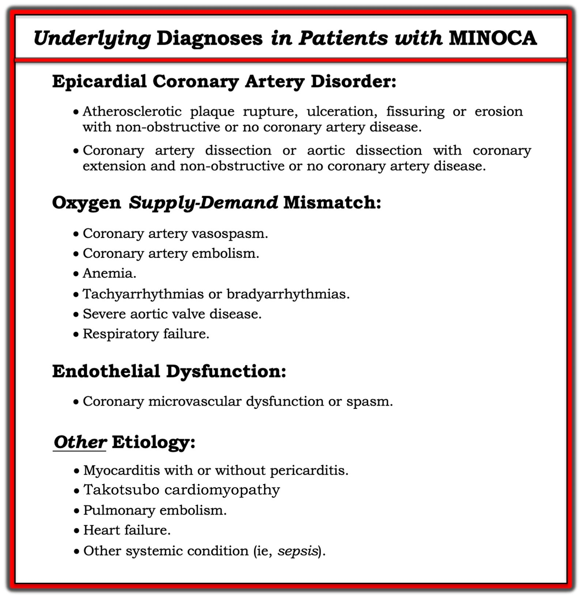
==========================================
Trích từ Bình luận của tôi trong bài ngày 14 tháng Mười Một năm 2019 trên Dr. Smith’s ECG Blog:
==========================================
Một chủ đề rất đáng ôn lại định kỳ — là khái niệm biến dạng phần cuối QRS (T-QRS-D). Trước khi làm việc với BS Stephen Smith — tôi không hề biết khái niệm này. Khi có mặt — T-QRS-D có thể hỗ trợ vô giá trong việc phân biệt tái cực sớm với OMI cấp (tức là, Khi có T-QRS-D thật sự ở một bệnh nhân có triệu chứng mới — nó hầu như có giá trị chẩn đoán OMI cấp). Ôn lại:
- T-QRS–D — được định nghĩa là không có cả sóng J lẫn sóng S ở hoặc chuyển đạo V2 hoặc chuyển đạo V3. Mặc dù định nghĩa đơn giản — dấu hiệu này có thể rất tinh tế! Tôi hoàn toàn thừa nhận rằng tôi đã mất một thời gian mới cảm thấy thoải mái và tự tin khi nhận ra nó.
- LƯU Ý: Trong bối cảnh lâm sàng “phù hợp” — các BS Smith và Meyers đôi khi chấp nhận T-QRS-D ở chuyển đạo V4 như một dấu hiệu gợi ý OMI cấp. Giá trị của dấu ấn điện tâm đồ này kém chắc chắn hơn ở các chuyển đạo ngoài V2,V3,V4.
Một bức tranh đáng giá 1.000 lời. Tôi đã lấy các ví dụ về chuyển đạo V3 trong Hình 3 từ các ca trước đã đăng trên Dr. Smith’s ECG Blog:
- PHÍA TRÊN trong Hình 3 — Dù ST chênh lên rõ ở chuyển đạo V3 này — đây không phải là T-QRS-D, vì có khía điểm J (mũi tên XANH) rõ nét. Bệnh nhân này có một biến thể tái cực là nguyên nhân gây ST chênh lên.
- PHÍA DƯỚI trong Hình 3 — Đây là T-QRS-D, vì ở chuyển đạo V3 này không có khía điểm J — và cũng không có sóng S (mũi tên ĐỎ cho thấy sóng cuối cùng của QRS không bao giờ đi xuống dưới đường nền).

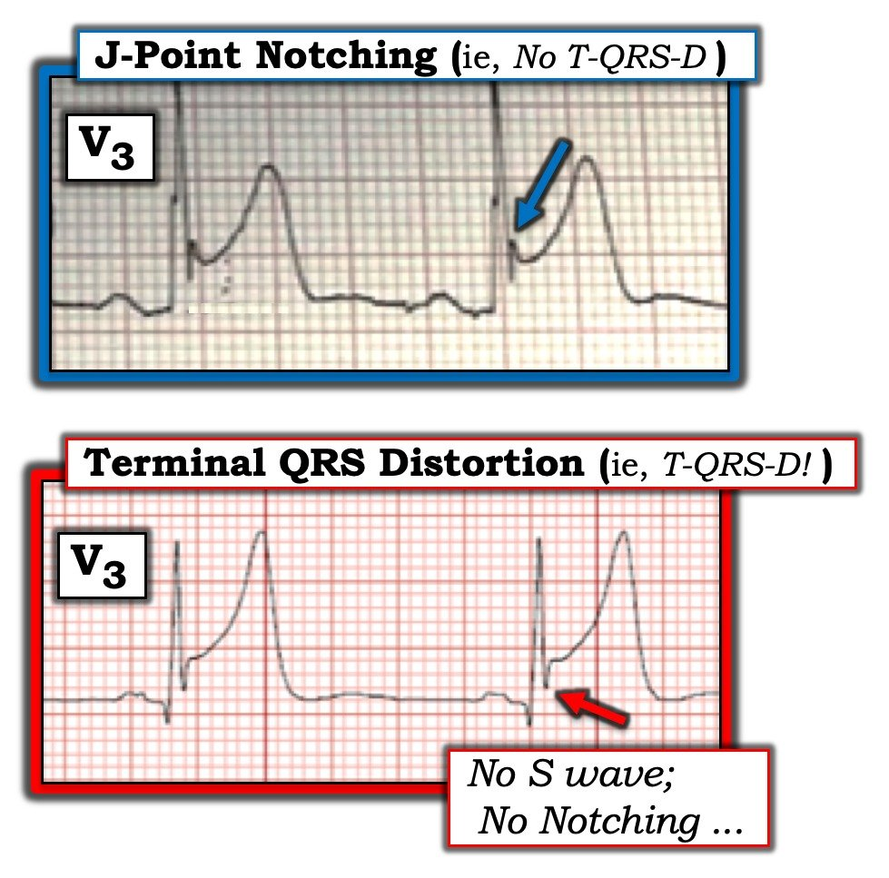
Để minh họa thêm khái niệm T-QRS-D — tôi đã ghép trong Hình 4 2 điện tâm đồ đầu tiên trình bày trong bài ngày 14 tháng Mười Một năm 2019.
- Có phải rất dễ bị cám dỗ để nói rằng có T-QRS-D trên điện tâm đồ ban đầu ghi tại khoa cấp cứu ( = Điện tâm đồ #1 trong Hình 4)? Xét cho cùng, không có sóng S ở chuyển đạo V3 …

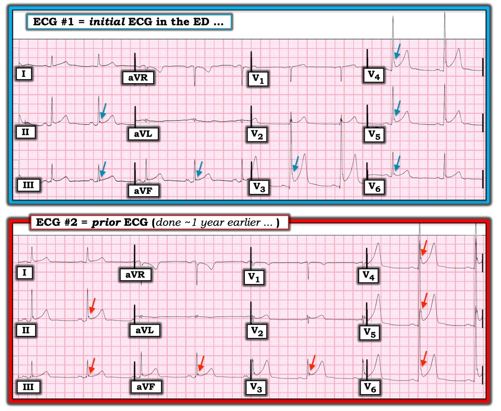
BÌNH LUẬN về Điện tâm đồ #1 trong Hình 4: Bệnh nhân trong ca đó là một người đàn ông ngoài 50 tuổi, đến khám vì đau vai trái. Như BS Smith đã nêu — có ST chênh lên rõ rệt ở chuyển đạo V3 — với mức ST chênh lên ít hơn ở các chuyển đạo thành dưới và bên trước tim.
- Lý do hình ảnh ST-T ở chuyển đạo V3 của điện tâm đồ #1 không đủ tiêu chuẩn T-QRS-D — là vì dù không có sóng S ở chuyển đạo này, vẫn có khía điểm J (hoặc ít nhất là điểm J trát đậm), đặc trưng của các biến thể tái cực.
- Các đặc điểm điện tâm đồ khác ở điện tâm đồ #1 ủng hộ một biến thể tái cực thay vì OMI cấp gồm: i) Khoảng QTc tương đối ngắn và sóng R cao ở các chuyển đạo trước tim giữa; ii) Không có ST chênh xuống soi gương; iii) Các sóng T nhọn có “dáng vẻ” giống nhau mà ta thấy ở ít nhất 9 trong 12 chuyển đạo của điện tâm đồ #1 (so với hình ảnh ST-T khu trú hơn, điển hình của nhồi máu cấp); và, iv) Khía hoặc trát đậm điểm J, điển hình của biến thể tái cực, ở không dưới 7 trong 12 chuyển đạo của điện tâm đồ #1 (các mũi tên XANH trong Hình 4).
ĐIỀU CỐT LÕI: Mặc dù tổng hợp các đặc điểm trên khiến khả năng điện tâm đồ #1 không phản ánh OMI cấp cao hơn — dù vậy vẫn có mức ST chênh lên đáng kể ở nhiều chuyển đạo ở người đàn ông ngoài 50 tuổi này, vốn đến khám vì triệu chứng mới.
- Do đó — cần có thêm thông tin để đạt mức chắc chắn cao hơn (tức là, siêu âm tim khẩn tìm rối loạn vận động thành; ghi thêm điện tâm đồ cho bệnh nhân; xét nghiệm troponin liên tiếp).
- Trong ca này — việc tìm được một điện tâm đồ trước đây của bệnh nhân từ một năm trước đã làm sáng tỏ vấn đề (Điện tâm đồ #2 trong Hình 4). Cả việc không có sóng S ở chuyển đạo V3 lẫn khía hoặc trát đậm điểm J đều không phải là dấu hiệu mới (các mũi tên ĐỎ trong điện tâm đồ #2). Điều này khẳng định nhận định rằng hình ảnh ST-T ở điện tâm đồ #1 phản ánh một biến thể tái cực lâu dài ở bệnh nhân này.
- T.B. (P.S.): Vì có một tỷ lệ phần trăm rất nhỏ nhưng có thật các biến cố loạn nhịp tim gây tử vong ở những người trẻ trưởng thành vốn khỏe mạnh có biến thể tái cực — tôi không còn dùng thuật ngữ “BER” (Benign Early Repolarization – tái cực sớm lành tính) khi thấy loại dấu hiệu điện tâm đồ này (Zakka & Refaat-ACC, 2016). Thay vào đó, tôi chỉ gọi là “biến thể tái cực” — vì dấu hiệu điện tâm đồ này thường, nhưng không phải 100%, là “lành tính”. NẾU một bệnh nhân có các dấu hiệu điện tâm đồ như ở điện tâm đồ #1 đến khám vì ngất mới xuất hiện, nghe có vẻ do tim — thì cần đánh giá đầy đủ.